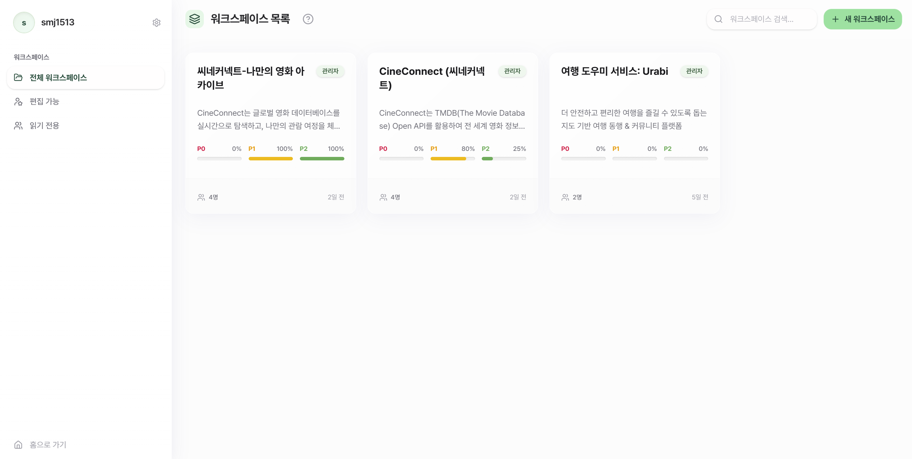
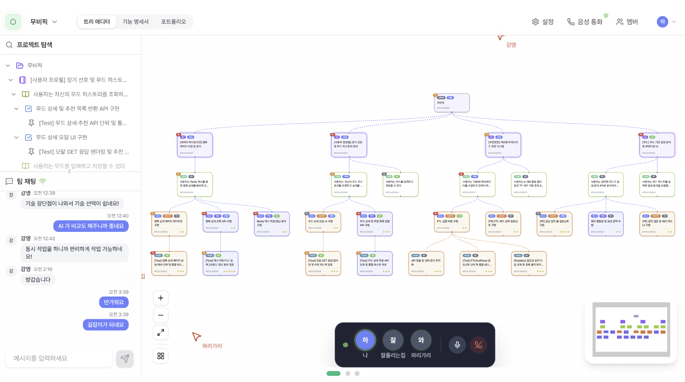
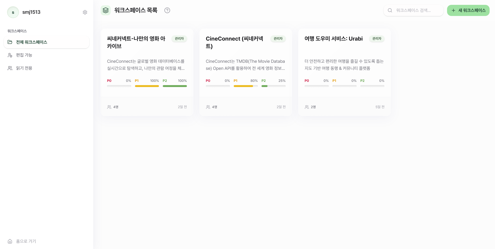
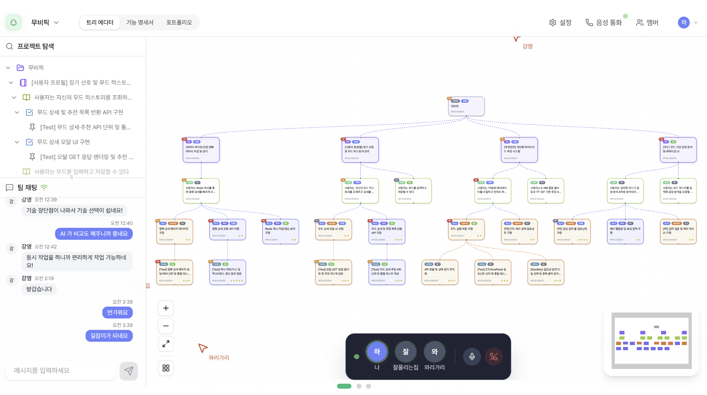

성민제 MinJe Seong
“꾸준한 배움을 통해 소통하며 성장하는 개발자 성민제입니다.”
👋 About me
개발은 혼자만의 여정이 아니라, 동료와 함께 성장하는 과정이기도 합니다. 그렇기에, 저는 기술적 성장만큼이나 소통과 나눔의 가치를 중요하게
생각합니다.
세미나와 멘토 활동을 통해 지식을 나누고 함께 문제를 해결하는 기쁨을 경험하며 늘 저의 지식을 타인에게 전달하고자 노력해왔습니다.
그렇게 배움의 과정 속에서 동료와 소통하며 함께 성장하는 과정을 즐기고 있습니다.
매일 마주하는 새로운 배움을 거름 삼아, 어제보다 성장한 오늘의 제가 팀과 동료들에게 긍정적인 영향을 주는 사람으로 기억되기를 바랍니다.
🔨 Skills and Tools
📝 Projects
ProjecTree - 아이디어를 현실로, 나의 여정을 포트폴리오로. 2026.01 ~ 2026.02

📦 프로젝트 상세
"막막한 프로젝트 기획의 길잡이이자 나를 가장 잘 아는 포트폴리오 작가"
[실제 사용자 화면]

 




프로젝트 개요
초보 개발자는 프로젝트를 시작할 때 “무엇을, 어떤 순서로, 어디까지” 설계해야 하는지 막히고, 완료 후에는 기여를 포트폴리오로 정리하는 데 다시 많은 시간을 소모합니다.
이 프로젝트는 그중에서도 가장 큰 병목인 “초기 기획의 구조화 부재”를 우선 해결 대상으로 잡아, 목표→요구사항→세부 작업으로 이어지는 계층형 설계를 자동 보조하도록 설계했습니다.
동시에 개발 과정 데이터가 포트폴리오 초안으로 자연스럽게 이어지도록 연결해, 기획과 결과 정리가 분리되는 문제를 함께 줄이도록 했습니다.
📖 내용
- 문제와 해결 방법: 초기 버전은 에이전트 응답이 최대 5분까지 지연되어 사용자가 진행 상태를 알 수 없었고, 모든 로그를 그대로 분석해 토큰 비용이 급격히 증가했습니다. 이를 해결하기 위해 LangChain 콜백을 CRDT 서버와 연동해 에이전트 사고 과정을 실시간으로 노출했고, 로그 처리에는 경량 필터링 모델과 고성능 생성 모델을 분리한 Two-Pass 파이프라인을 적용해 비용과 체감 대기시간을 동시에 개선했습니다.
- 비교분석/성능 측정: 계층 조회 구조는 Self-Referencing(재귀 CTE)와 Closure Table을 동일 데이터 조건에서 비교했습니다. 약 5,500만 건, 최대 깊이 5단계 환경에서 Self-Referencing은 평균 12.0초가 소요된 반면, Closure Table + 인덱스 적용 후 0.8초 수준으로 단축되어 읽기 중심 서비스 특성에 더 적합하다는 결론을 얻었습니다.
- AI 기반 맥락 인식형 프로젝트 설계: 프로젝트의 목표, 기술 스택, 팀 규모 등 전반적인 맥락을 이해하고 계층적 구조(대주제 → 요구사항 → 세부 작업)를 제안
- 과정 중심의 포트폴리오 자동화: 개발 과정에서 축적된 태스크와 의사결정을 분석하여 스토리텔링형 포트폴리오 자동 생성
- 실시간 협업 지원: CRDT 기술을 통해 팀원 간 충돌 없는 실시간 기획 및 수정 환경 제공
- 기술 스택 비교 및 추천: 단순 추천을 넘어 경쟁 기술(Frontend/Backend 등) 비교 분석 및 논리적 선정 근거 제공
🙋♂️ 역할 및 기여 (Technical Contributions)
- 기획 프로세스를 반영한 Context-Aware 에이전트 설계
- PM, PO, Tech Lead의 수직적 역할 부여 및 피드백 루프 구현으로 기획의 논리적 완성도 확보
- JSON Schema 검증 및 자가 수정 기능을 통해 에이전트 출력의 안정성 보장
- CRDT 폴링을 활용한 실시간 피드백 시스템 구축
- LangChain 콜백 핸들러를 커스터마이징하여 에이전트의 사고 과정(Thought Process)을 실시간으로 중계
- 별도 SSE 서버 구축 없이 기존 CRDT 서버를 활용하여 인프라 복잡도 최소화
- 검색 도메인 제어를 위한 커스텀 미들웨어 개발
- LangChain Custom Middleware를 통해 검색 도구 호출 시 신뢰할 수 있는 도메인(White List)으로 검색 범위 강제
- 공식 문서 및 양질의 기술 블로그 위주의 정보 제공으로 답변 신뢰도 확보
- 기술 스택 제외 및 비교 분석 로직 구현
- Negative Constraint를 적용하여 기 추천된 기술 제외 및 새로운 대안 탐색 유도
- 동일 계층 내 경쟁 기술 비교 분석(Layer Comparison)을 통해 논리적 기술 선정 경험 제공
- Langfuse 기반 LLM Observability 환경 구축
- Langfuse를 도입하여 에이전트 실행 과정 시각화 및 병목 지점(ReAct 루프 등) 식별
- 추론 통제 및 프롬프트 최적화를 통해 응답 시간을 5분에서 30초로 단축
- GitHub OAuth2 이메일 누락 대응 로직 구현
- GitHub API의 이메일 정보 누락(Private 설정 시) 문제 해결을 위해 추가 API 호출 및 Primary 이메일 필터링 로직 구현
- JPA Inheritance(JOINED)를 활용한 확장성 있는 엔티티 설계
- Node(부모) - Epic/Story/Task(자식) 구조로 공통 속성과 고유 로직 분리
- 객체지향적 다형성을 활용하여 코드 중복 제거 및 유지보수성 향상
- Closure Table 도입을 통한 계층 조회 성능 최적화
- 재귀 쿼리(Recursive CTE)의 성능 한계를 극복하기 위해 Closure Table 패턴 도입
- 대용량 데이터(5,500만 건) 환경에서 계층 조회 성능을 12초에서 0.8초로 (약 15배) 개선
- 복잡한 비즈니스 요구사항을 처리하는 Node API 개발
- 팩토리 메서드 패턴을 적용하여 다양한 노드 타입(Epic, Story, Task)의 일관된 생성 및 CRDT 연동 처리
🤔 고민 및 구현 (Challenges & Solutions)
- LLM의 응답 지연으로 인한 사용자 경험 저하 문제
- 복잡한 에이전트 연산으로 인해 화면이 멈춘 듯한 느낌을 줌
- 해결: CRDT 폴링 시스템을 구축하여 에이전트의 "생각하는 과정"을 실시간 텍스트로 스트리밍하여 사용자 신뢰도 제고
- 무분별한 로그 분석으로 인한 과도한 토큰 비용 발생
- 단순 오타 수정 등 무의미한 데이터까지 분석하여 비용 낭비 및 중요 정보 희석
- 해결: Two-Pass Pipeline을 도입, 경량 모델로 1차 필터링 후 고성능 모델로 포트폴리오 생성
- ReAct 에이전트의 무한 루프 및 긴 응답 시간
- 특정 태스크에서 모델이 동일한 도구를 반복 호출하며 응답 시간이 5분 이상 소요
- 해결: Langfuse로 트레이스 분석 후, 모델의 자체 추론을 억제하고 명시적 지시를 따르도록 프롬프트 최적화 (30초로 단축)
- 재귀적 트리 구조 조회 성능 이슈
- Self-Referencing 구조에서 깊이가 깊어질수록 조회 성능 급격히 저하 (12초 소요)
- 해결: Closure Table 도입 및 인덱스 최적화로 조회 성능 획기적 개선 (0.8초)
📌 결과와 회고
이 프로젝트에서는 응답 지연과 계층 조회 병목이 사용자 경험을 저해하는 핵심 문제였습니다. 저는 Langfuse 기반 관측과 데이터 구조 재설계를 병행해 원인을 분리하고, 응답 시간을 5분에서 30초로, 트리 조회 시간을 12.0초에서 0.8초로 개선했습니다. 이 경험을 통해 성능 개선은 단일 프롬프트 조정보다 관측 체계와 데이터 모델까지 포함한 시스템 단위 접근이 가장 효과적이라는 점을 학습했습니다.
📝 Projects
P-PliP - P 성향 여행자를 위한 즉흥 여행 도우미 2025.11.01 ~ 2025.12.26

📦 프로젝트 상세
"계획 세우기는 귀찮지만, 효율적인 여행은 하고 싶은 P 성향 여행자를 위한 즉흥 여행 도우미"
[실제 사용자 화면]

프로젝트 개요
기존 여행 서비스는 상세 일정 수립을 전제로 설계되어, “계획은 싫지만 효율적인 여행은 원하는” 사용자에게는 진입 장벽이 높다는 문제가 있었습니다.
이 프로젝트는 그중 핵심 문제를 “계획 피로로 인한 의사결정 지연”으로 정의하고, 모호한 요청에서도 즉시 추천을 제공한 뒤 필요할 때만 코스 생성을 확장하는 흐름으로 설계했습니다.
즉, 사용자가 긴 검색·비교 과정을 거치지 않고도 바로 실행 가능한 선택을 하게 만드는 것을 1차 목표로 두었습니다.
📖 내용
- 문제와 해결 방법: Open-domain 관광 추천에서는 “정답이 하나”가 아니기 때문에 기존 NDCG만으로 실제 만족도를 설명하기 어려웠고, 카테고리 불일치(카페 요청에 식당 추천) 문제가 반복됐습니다. 이를 해결하기 위해 RAGAS 기반 LLM-as-Judge 평가 체계를 도입하고, Category Alignment/Vibe Relevance 지표를 설계했으며, 검색 실패 시 쿼리를 재작성하는 Self-Correction 루프를 파이프라인에 통합했습니다.
- 비교분석/성능 측정: Dense(0.6625), Sparse(0.6566), Hybrid(0.7918), HyDE(0.7923)를 동일 평가셋에서 비교했습니다. 최종적으로 Hybrid/HyDE 계열이 카테고리 일치성과 분위기 적합성에서 모두 안정적인 상위 성능을 보여 채택했으며, 전체 추천 품질을 기존 대비 약 20% 개선했습니다.
- MBTI P성향(인식형) 여행자들은 크게 계획에 얽매이는 것을 싫어하는 유형과, 계획을 세우는 것이 힘들거나 어려워서 싫어하는 유형 두 가지가 존재
- 이러한 P성향 여행자들은 장소를 체계적으로 찾거나 계획을 세우는 것이 어렵거나 귀찮아서 여행을 떠나는 것이 쉽지 않음
- 사용자가 즉흥적으로 현재 원하는 장소를 추상적인 문장으로 입력시 주변 관광지 중 가장 적합한 장소를 찾아서 추천
- 이후 추천 받은 장소 혹은 마음에 드는 장소 중 한 곳을 골라 그 주변으로 여행 계획을 자동으로 생성하는 기능 제공
- 자신의 여행 경험을 공유할 수 있는 커뮤니티 기능과 여행지 리뷰 기능을 제공
🙋♂️ 역할 및 기여 (Technical Contributions)
- LLM as Judge 추천 품질 평가 지표(Metric) 수립
- 기존 추천 성능 지표(NDCG 등)의 한계를 극복하기 위해 'Category Alignment'와 'Vibe Relevance' 커스텀 메트릭 설계
- RAGAS 프레임워크를 활용하여 추천 결과의 정성적 일치도를 자동 평가하는 워크플로우 구축
- 지표 설계후 개선 과정을 통해 HyDE(Hypothetical Document Embedding) 검색 기능 도입을 통해 추천 성능 20%향상
- LangGraph 상태 관리 및 분기 처리 구현
- 검색 실패 시 재시도(Loop), 조건부 숙소 검색(Conditional Edge)등 흐름 제어 구현
- LangGraph를 활용하여 복잡한 흐름 제어를 위한 상태 관리 및 분기 처리 구현
- Spring Security + JWT 기반 인증 시스템 구현
- 사용자 인증을 위한 JWT 토큰 생성 및 관리
- 사용자 권한 관리 및 인증된 사용자만의 정보를 조회할 수 있도록 권한 관리 구현
- 추론 서버 부하 감소를 위한 Cache 기반 락(Lock) 구현
- Caffeine 캐시를 락(Lock)으로 활용하여 시간이 오래 걸리는 AI 추론 요청에 대한 중복 호출 방지 및 동시성 제어
- 도메인별(관광지 추천, 여행 계획 등)로 락의 생명주기(TTL)와 키 전략을 독립적으로 관리
- 안정적인 락 해제 전략: AI서버 요청 과정에서 발생 예외를 Custom AIServerErrorException으로 래핑 및 예외 발생 시 @ExceptionHandler를 통해 락을 즉시 해제하여, 요청 실패가 데드락(Deadlock)으로 이어지지 않도록 예외 처리 강화
- 확장성과 유지보수성을 고려한 범용 파일 서비스 아키텍처 설계
- 팩토리 메서드 패턴을 적용하여 객체 생성 책임을 분리, 일관된 메타데이터 관리 구현
- 전략 패턴을 활용하여 이미지 유형에 따라 적절한 데이터 접근 객체(DAO)를 런타임에 동적으로 선택하도록 구현하여 역할 분리
- 배치 처리를 도입하여 다중 파일 업로드 및 메타데이터 일괄 업데이트 시 DB 커넥션 비용 최소화 및 성능 최적화
🤔 고민 및 구현 (Challenges & Solutions)
- 정답이 없는 Open Domain 검색의 성능 평가 문제
- 기존 검색 지표(NDCG)는 정답이 명확한 태스크에 적합하나, "분위기 좋은 카페" 같은 추상적 질의 평가에는 한계가 있음을 확인
- 해결: LLM as Judge (RAGAS) 방법론을 도입, '카테고리 일치성'과 '분위기 적합성'이라는 커스텀 지표를 설계하여 사람의 개입 없는 자동화된 정성 평가 파이프라인 구축 (0.66 → 0.79 성능 향상)
- Vector Store(Qdrant)와 LangChain 간의 메타데이터 호환성 이슈
- LangChain의 QdrantVectorStore가 중첩된 Payload 데이터를 Document 객체의 metadata로 온전히 매핑하지 못하는 문제 발생
- 해결: 라이브러리 내부 로직을 분석하여 'CustomQdrantVectorStore'를 구현하고 '_document_from_point' 메서드를 오버라이딩함으로써 데이터 마이그레이션 없이 호환성 문제 해결
- LLM 환각 제어 및 워크플로우 관리
- 단순 Chain 방식은 예외 상황 대처가 어렵고 단방향 흐름만 가능하여 복합적인 여행 계획 생성에 부적합
- 해결: LangGraph를 도입하여 검색 품질이 낮을 경우 쿼리를 수정하여 재검색하거나, 조건에 따라 단계를 건너뛰는 Self-RAG 시스템 구현
- Sparse Embedding 모델의 속도 최적화
- 성능이 우수한 Splade 모델은 인덱싱 속도가 느려 실시간 서비스에 부담
- 해결: 인덱싱은 GPU 배치 작업으로 미리 수행하고, 실시간 서빙은 CPU에서 수행하도록 파이프라인을 이원화하여 운영 효율성 확보
📌 결과와 회고
초기에는 추천 품질 저하의 원인을 모델 성능으로만 해석했지만, Open-domain 환경에서는 평가 기준 자체가 더 큰 변수였습니다. 저는 RAGAS 기반 평가 체계를 재설계하고 Hybrid/HyDE 실험을 통해 Dense(0.6625) 대비 0.7918~0.7923 수준으로 끌어올려 약 20% 품질 개선을 달성했습니다. 이 과정에서 기능 개발보다 먼저 지표를 정의하고 실험-배포를 연결하는 루틴이 재현 가능한 개선의 핵심이라는 점을 체득했습니다.
📝 Projects
law-in-comm - AI 어시스턴트 기반 법률 상담 커뮤니티 플랫폼 2025.02 ~ 2025.06

📦 프로젝트 상세
모델 Huggingface 누적 다운로드 수 1684회(2026.01.15 기준)
"AI와 법률 전문가를 연결하여 법률 서비스의 문턱을 낮추는 지능형 법률 상담 플랫폼"
[실제 사용자 화면]

프로젝트 개요
법률 상담은 비용 부담, 어려운 용어, 절차 복잡성 때문에 “질문을 시작하기도 어려운” 접근성 문제가 먼저 발생합니다.
이 프로젝트는 그중 가장 선행되는 문제를 “초기 진입 장벽”으로 정의하고, AI 1차 상담으로 빠르게 방향성을 제공한 뒤 필요 시 전문가 상담으로 연결되는 이중 구조로 설계했습니다.
목표는 상담 시작 문턱은 낮추되, 답변의 근거성과 신뢰도는 유지해 실제로 사용할 수 있는 법률 지원 경험을 만드는 것이었습니다.
📖 내용
- 문제와 해결 방법: 범용 임베딩 모델은 법률 용어의 맥락 차이를 충분히 반영하지 못해 판례 검색 정확도가 낮고, 상담 답변의 근거 신뢰도가 떨어지는 문제가 있었습니다. 이를 해결하기 위해 법률 QA 데이터셋 기반 파인튜닝과 Contrastive Learning을 적용해 도메인 특화 임베딩을 구축하고, 실제 상담 흐름에 맞춰 RAG 검색 정확도를 우선 개선했습니다.
- 비교분석/성능 측정: Base 모델과 법률 특화 임베딩을 동일 평가 조건에서 비교해 NDCG@5를 7.2% 향상시켰습니다. 또한 단일 GPU(24GB) 환경에서 배치 한계를 넘기 위해 Gradient Caching을 적용해 논리 배치사이즈를 512까지 확장했고, 성능 개선과 학습 안정성을 함께 확보했습니다.
- RAG 기반 법률 상담: AI가 판례 기반으로 1차 답변을 제공하여 빠른 궁금증 해소
- 전문가 1:1 상담: WebSocket 기반 실시간 채팅으로 변호사와 심도 있는 상담 가능
- 커뮤니티 기능: 질문/답변 게시판을 통해 다른 사용자 및 전문가와 지식 공유
- 안정적인 시스템: Spring Boot 기반의 견고한 서버 및 Docker/GitHub Actions를 통한 CI/CD 구축
🙋♂️ 역할 및 기여 (Technical Contributions)
- 법률 데이터셋 구축 및 임베딩 모델 파인튜닝
- 일반 모델의 한계를 극복하기 위해 법률 도메인 특화 데이터셋 구축 및 Fine-tuning 수행
- Contrastive Learning 적용으로 Base Model 대비 NDCG@5 Score 7.2% 향상
- RAG 파이프라인의 검색 정확도를 높여 신뢰성 있는 법률 정보 제공 기반 마련
- DDD 기반 아키텍처 설계
- 전략(Strategy) 및 팩토리(Factory) 패턴을 적용하여 파일 저장소 및 처리 로직의 확장성 확보
- JPA 상속 클래스(JOINED) 전략을 사용하여 사용자(일반/변호사) 계층 구조를 효율적으로 모델링
- 템플릿 메서드 패턴으로 사용자 유형별 공통 로직과 고유 행위를 깔끔하게 분리
- 인터셉터를 활용한 WebSocket 세션 인증관리
- STOMP 프로토콜 연결(CONNECT) 단계에서 `ChannelInterceptor`를 활용하여 JWT 토큰 유효성 검증
- 메시지 브로커 앞단에서 비인가 접근을 차단하여 실시간 채팅 서비스의 보안성 강화
- 안정적인 인프라 구축
- Docker 컨테이너를 활용하여 개발 및 배포 환경의 일관성 보장
- GitHub Actions 기반 CI/CD 파이프라인 구축으로 배포 자동화 및 생산성 증대
- AWS S3를 연동하여 이미지 등 대용량 정적 파일의 안정적인 저장 및 서빙
🤔 고민 및 구현 (Challenges & Solutions)
- 임베딩 모델 학습 시 배치 사이즈 한계 극복 (Gradient Caching)
- 대조 학습(Contrastive Learning)은 Negative Sampling을 위해 큰 배치 사이즈가 중요하나, 단일 GPU(24GB) 환경의 메모리 제약 발생
- 해결: Gradient Caching을 적용하여 하드웨어 제약을 극복하고 논리적 배치 사이즈를 512까지 확대, 성공적인 학습 및 성능 향상 성공
- 법률 용어의 특수성과 검색 정확도 문제
- 일반적인 임베딩 모델은 법률 용어의 미묘한 차이를 구분하지 못해 검색 품질이 낮음
- 해결: AI Hub의 법률 QA 데이터셋을 활용하여 도메인 적응 학습(Fine-tuning)을 수행, 법률 문맥 이해도 향상
- 사용자 유형별 데이터 모델링의 복잡성
- 일반 사용자와 변호사는 공통점도 있지만 서로 다른 속성과 권한을 가짐
- 해결: DB 차원에서는 1:1 관계의 테이블로 분리하고, 객체 차원에서는 상속 관계를 매핑하여 데이터 무결성과 코드 재사용성 확보
📌 결과와 회고
이 프로젝트의 핵심 과제는 법률 도메인에서 범용 임베딩의 한계를 넘어 검색 신뢰도를 확보하는 것이었습니다. 저는 도메인 데이터 기반 파인튜닝과 학습 전략 개선으로 Base 대비 NDCG@5를 7.2% 향상시켰고, 모놀리식+AI 서빙 분리 구조로 개발 속도와 운영 유연성도 함께 확보했습니다. 이를 통해 모델 선택 자체보다 데이터 품질과 학습 전략 설계가 실제 성능을 좌우한다는 점을 명확히 검증했습니다.